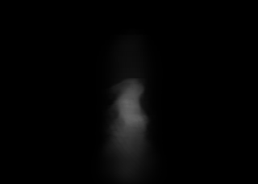

Exact R5 source, camera, and Beer-Lambert transfer. Dense samples: 12,061,035.

0 / 64,000 bricks; halo fine cells 0.0%; charged samples 33.4%; luma nMSE 5.010e-3.
20 / 64,000 bricks; halo fine cells 0.1%; charged samples 33.5%; luma nMSE 4.242e-3.
53 / 64,000 bricks; halo fine cells 0.2%; charged samples 33.5%; luma nMSE 2.717e-3.

124 / 64,000 bricks; halo fine cells 0.4%; charged samples 33.6%; luma nMSE 1.360e-3.

259 / 64,000 bricks; halo fine cells 0.6%; charged samples 33.8%; luma nMSE 5.230e-4.

394 / 64,000 bricks; halo fine cells 0.9%; charged samples 34.0%; luma nMSE 2.628e-4.

614 / 64,000 bricks; halo fine cells 1.4%; charged samples 34.3%; luma nMSE 9.812e-5.

789 / 64,000 bricks; halo fine cells 1.7%; charged samples 34.5%; luma nMSE 5.001e-5.

64,000 / 64,000 bricks; halo fine cells 100.0%; charged samples 100.0%; luma nMSE 0.000e+0.